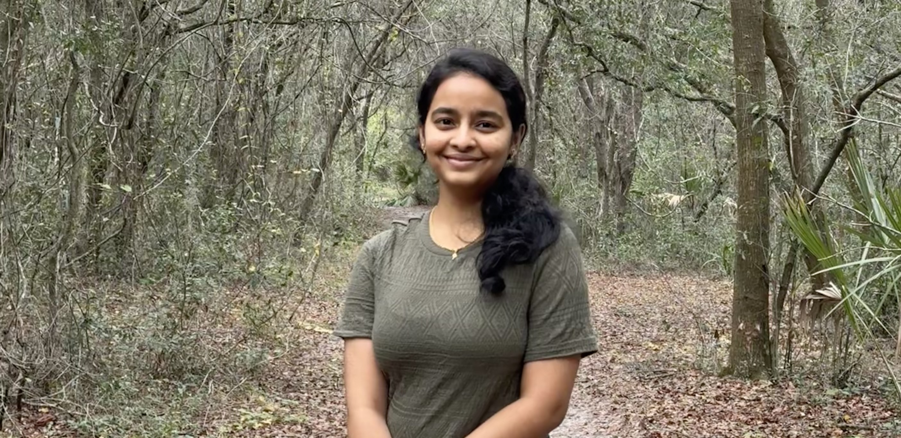

Nature's Basket is your go-to destination for the freshest and finest quality produce. We pride ourselves on offering a wide variety of fruits, vegetables, dairy products, and other essentials, all sourced from trusted local farmers and suppliers. Our commitment to sustainability and freshness ensures that you and your family enjoy nutritious and delicious meals every day. At Nature's Basket, we believe in nurturing a healthier community by providing access to wholesome, natural foods. Visit us for a delightful shopping experience that brings nature's best right to your basket.
About the developer
A passionate student developer pursuing a Master of Science in Business Analytics and Information Systems at the University of South Florida. With a strong background in web development and data analytics, I am dedicated to creating innovative, user-friendly platforms. My goal is to enhance user experiences and provide valuable solutions through technology. My experience as a Data Analyst at Cognizant has equipped me with a solid understanding of data management and analysis, which I integrate into my web development projects. The coursework at USF has significantly deepened my understanding of both fields, allowing me to merge theoretical knowledge with practical applications. This combination of skills allows me to build comprehensive, data-driven applications that not only meet but exceed user expectations. I am continually learning and adapting to new technologies to stay at the forefront of the ever-evolving tech landscape.
Contact: nivedithayeginati@usf.edu
How I Constructed the Website
I meticulously planned and designed the Nature's Basket website using HTML5, CSS3, and JavaScript to ensure a responsive and user-friendly interface. By creating wireframes and prototypes, I visualized the user flow and layout. The development process involved building key pages like Home, About Us, Manage Inventory, and Reviews, with a focus on functionality and aesthetics. JavaScript enhanced user interactions, such as the shopping cart and reviews. Rigorous testing ensured cross-browser compatibility, and the site was deployed for reliable hosting.
Technologies Used

Development Experience
Creating the Nature's Basket website has been an exciting and challenging experience. Throughout the development process, I have applied my knowledge and skills in web development to design a professional, visually appealing, and user-friendly platform. The goal was to ensure that visitors can easily navigate the site, explore a wide variety of fresh produce, and manage their grocery shopping effortlessly. This project has allowed me to integrate modern web technologies, enhance user experience, and create a robust online presence for Nature's Basket.
GitHub Repository
My GitHub account has all of the source code for the Nature's Basket website. You can examine the code, access the entire repository, and even contribute to the work of the team. Visit my GitHub profile at the link below to explore the source code and gain insights into the development process. Your feedback and contributions are highly appreciated as they help in continuously improving the platform.
Thank you for shopping at Nature's Basket! We appreciate your support and look forward to serving you again soon!